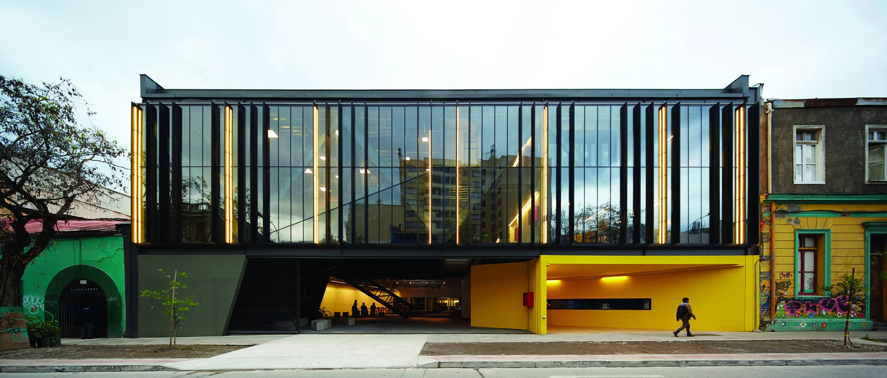
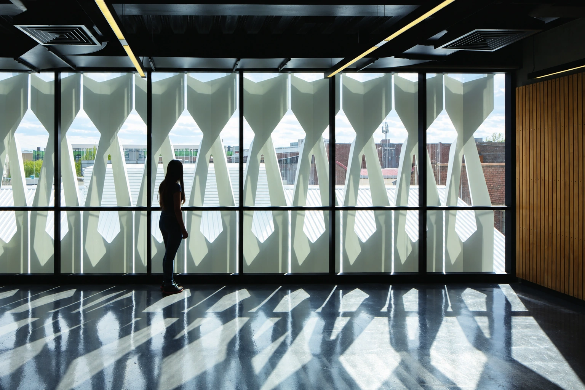
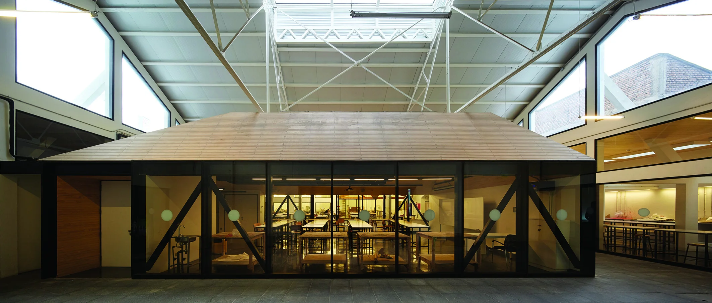
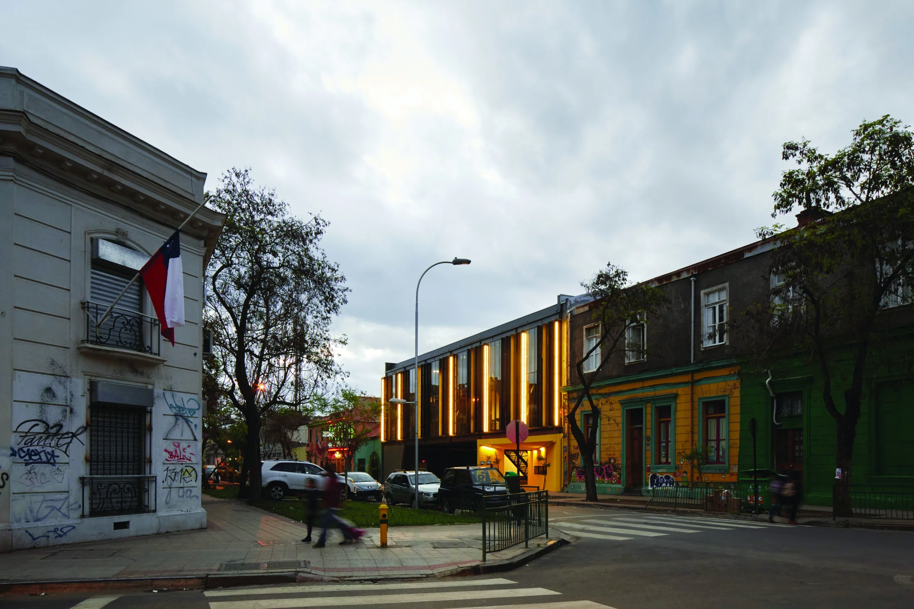

Un lugar para
aprender y crear.

- Proyecto
- 2012
- Construcción
- 2013–2015
- Superficie construida
- 3.500 m²
- Arquitectos
- OF + Miguel Casassus
- Fotografía
- Cristóbal Palma
- Concurso
- Primer premio
La escuela se abre
a la ciudad.
La extensión de la Facultad de Arquitectura, Arte y Diseño reúne nuevas salas de clases y espacios para la experimentación bajo las estructuras de un antiguo garaje del barrio República.
El proyecto conserva y transforma las cubiertas existentes en patios de trabajo y exposición. Hacia la calle, un nuevo frente construye la presencia de la escuela y hace visible su actividad: la arquitectura como soporte del aprendizaje y como vínculo entre las artes y la ciudad.
Controlar el sol.
Mantener la mirada.
La fachada poniente incorpora una segunda piel de elementos industrializados de plancha de acero plegada y prepintada. Sus pliegues controlan la incidencia solar y permiten mantener las vistas hacia el entorno: una solución que reúne protección, luz y relación con la ciudad.


